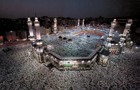

Lezione 6  islam
islam

Un detto del Profeta (Maometto) afferma che «l’islam è costruito su cinque cose: l’attestazione per cui non vi è divinità all’infuori di Dio, l’esecuzione della preghiera, l’elargizione dell’elemosina, l’adempimento del digiuno nel mese di Ramadan e il pellegrinaggio alla Casa di Dio».
Questi cinque precetti sono i pilastri dell'islam, cioè le basi di questa religione. Rappresentano le azioni e i riti fondamentali che ogni buon musulmano deve compiere per raggiungere la salvezza. Sono in ordine della frequenza con cui devono essere compiuti.
Il primo pilastro è la professione di fede: ogni musulmano deve pronunciare molte volte al giorno, durante la preghiera ma anche in altri momenti, la formula «Attesto che non vi è dio oltre a Iddio, e che Maometto è l’Inviato di Dio». Serve per ricordare costantemente le verità essenziali dell’islam, ma ha anche un valore legale perché – se pronunciata in arabo e di fronte a testimoni – comporta l’adesione alla fede islamica.
Il secondo pilastro è la preghiera, che deve essere compiuta almeno cinque volte al giorno. Può essere recitata da soli o in gruppo. In questo caso viene recitata in una moschea e condotta da una guida che si chiama Imam. La preghiera deve essere recitata sempre con il viso rivolto verso la Mecca, deve essere preceduta da una formula che esprime l’intenzione di voler compiere una preghiera e avviene secondo una serie di movimenti e di recitazioni precise.
Il terzo pilastro è l’obbligo di fare l’elemosina ai poveri. È in realtà una vera e propria tassa, regolata sulla base di norme precise, che deve essere pagata pubblicamente una volta l’anno.
Il quarto pilastro è il digiuno rituale, dall’alba al tramonto, durante il mese di Ramadan, che è il mese in cui venne rivelato il Corano. È inteso come astensione dal cibo, dalle bevande e dagli atti sessuali, e implica una severa disciplina interiore che serve per la fortificazione della persona e della volontà del credente.
Il quinto pilastro è il pellegrinaggio alla Mecca e in particolare alla Kaa'ba, la pietra nera che rappresenterebbe un’immagine terrestre del trono di dio. Ogni credente deve raggiungere la Mecca almeno una volta nella vita.
I cinque pilastri dell’islam scandiscono la vita del fedele e della comunità, regolano la vita quotidiana, creano un senso di solidarietà, fratellanza e unità molto forti.